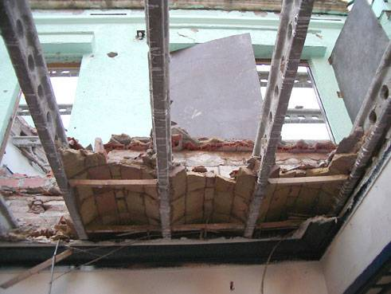
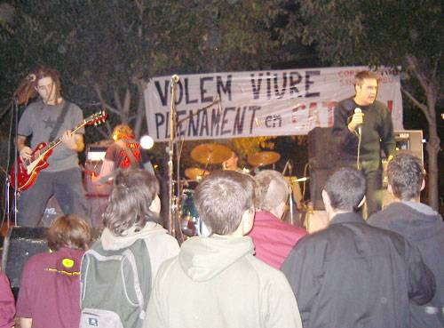

|
 | PER
LA CULTURA POPULAR ni abandonarem la Llengua ni abandonarem la lluita |  |
|  |  |  |  |  |  |
Manifest per l'atac al Correllengua
|
Per acabar-ho d'adobar el diumenge 19 la persona que va demanar el permís va rebre la notificació que havia estat denunciat per la Guàrdia Urbana per aldarulls públics. Evidentment, aquesta denúncia, efectuada per motius polítics, té la intenció d'advertir o dissuadir a les persones que en un futur vulguin fer activitats populars al carrer que poden ser sotmeses a pressions, retallades o agressions institucionals, és a dir, és un intent de frenar les activitats al carrer i la cultura popular, que no és res més que tot el que el poble fa per i des del poble. Aquest fet ens fa pensar que no hi havia predisposició per a què el concert es desenvolupés tal i com l'organització havia previst. A més, ja ens havien posat traves en negociacions anteriors, com ja havia passat l'any abans. Tanmateix, s'han explicat mentides i versions distorsionades d'aquest fet. Per què tantes traves al Correllengua? Per què tanta premeditació? Per què distorsionar la realitat tot i els i les testimonis nombroses del que va passar? Donats els fets, sembla que resulta molest que la gent de Sant Andreu s'organitzi i realitzi activitats culturals i festives desvinculades de l'ajuntament. Saben de la importància del teixit social que crea la cultura popular i al carrer, com a part essencial de les nostres vides, i no els agrada que ens la fem cada dia més nostre. Bona mostra d'això són les creixents retallades que pateixen altres activitats populars amb retallades de permisos, de diners o de locals i infrastructures per a poder-se realitzar. Si ens resistim totes les entitats i col·lectius a les seves retallades injustificables, acabaran totes les activitats amb un ball de bastons? Ja ha quedat clar que la seva reacció davant de la cultura realment popular són les porres i les mentides o distorsions informatives. Hi tenim molt a dir, la cultura popular i la nostra llibertat d'expressió estan en joc. Cal que no oblidin i que no oblidem que som tots els i les que construïm Sant Andreu i que per moltes traves que ens vulguin posar no podran fer callar la nostra veu, ni sota les porres ni entre les mentides i argúcies institucionals. Perquè som tots els i les que tenim la paraula i mai ens la podran prendre, encara que la seva repressió augmenti cada dia. Exigim totes i tots responsabilitats polítiques i la retirada de la denúncia ja que és una demostració de força per debilitar i criminalitzar el teixit social de Sant Andreu. Per tot això, a Sant Andreu, prou violència gratuïta, per la cultura popular i el teixit social, ni abandonarem la llengua ni abandonarem la lluita! Assemblea
del Correllengua de Sant Andreu de Palomar. |